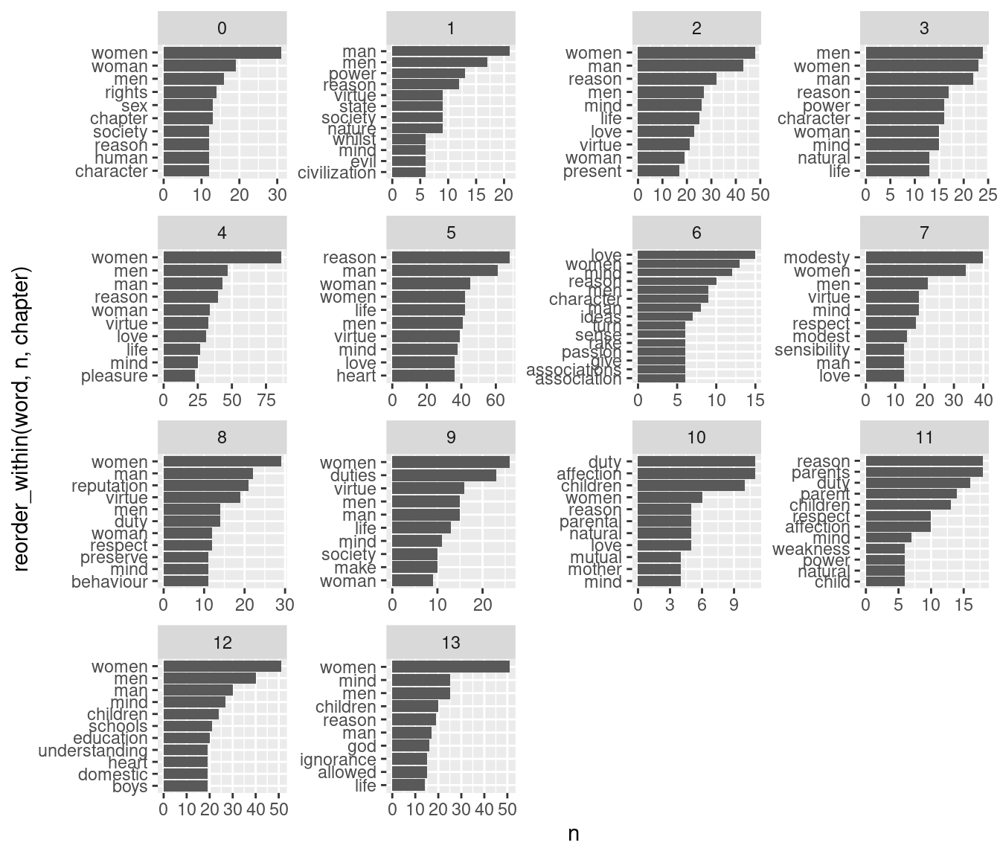

id company year_estab new
1 A-20-322 Pulse Solutions Co. c. 1990 Z-20-322
2 A-10-231 Apex Engineering LLC 1995 Z-10-231
3 B-20-865 NovaTech INC 2000 APP B-20-865
4 C-20-800 BetterPetFood Ltd 1980 C-20-800
5 A-20-900 Proxima Inc. 2011 Z-20-900
6 C-10-022 MakerMind Studios LLC circa 1950 C-10-022
7 B-10-822 TerraVerde Co. 1976 approx B-10-822
8 C-20-029 PulsePlay Productions Ltd 2010 C-20-029
9 A-20-116 Kinetix Design Co 2016 appr Z-20-116
Exercise
Filter the dataset to only get companies that have the “-20-” tag in their ID. Your code:
A very useful tool in string manipulation is that of regular expressions (or regex). Regular expressions allow you to search for patterns in text.
For example, let’s extract the uppercase letter from “id” using the “[:upper:]” regular expression. NB: “[:lower:]” would pick up a lowercase letter and “[:alpha]” would pick up any letter.
id company year_estab new
1 A-20-322 Pulse Solutions Co. c. 1990 A
2 A-10-231 Apex Engineering LLC 1995 A
3 B-20-865 NovaTech INC 2000 APP B
4 C-20-800 BetterPetFood Ltd 1980 C
5 A-20-900 Proxima Inc. 2011 A
6 C-10-022 MakerMind Studios LLC circa 1950 C
7 B-10-822 TerraVerde Co. 1976 approx B
8 C-20-029 PulsePlay Productions Ltd 2010 C
9 A-20-116 Kinetix Design Co 2016 appr A
Or extract the actual number from “year_estab”. The following pattern stands for “a digit, four consecutive times”:
id company year_estab new
1 A-20-322 Pulse Solutions Co. c. 1990 FALSE
2 A-10-231 Apex Engineering LLC 1995 TRUE
3 B-20-865 NovaTech INC 2000 APP FALSE
4 C-20-800 BetterPetFood Ltd 1980 TRUE
5 A-20-900 Proxima Inc. 2011 FALSE
6 C-10-022 MakerMind Studios LLC circa 1950 TRUE
7 B-10-822 TerraVerde Co. 1976 approx FALSE
8 C-20-029 PulsePlay Productions Ltd 2010 TRUE
9 A-20-116 Kinetix Design Co 2016 appr FALSE
Exercise
Discuss: how would you identify companies for which there’s uncertainty in the year of establishment? What’s the pattern in them?
Filter the dataset to only keep observations with uncertainty. Hint: you could use the “[:alpha:]” regular expression.
9.2 Tidy text analysis
We can use the tidytext package to conduct some basic text analysis using tidy data principles. Remember that in tidy data (Wickham 2014):
- Each variable is a column.
- Each observation is a row.
- Each type of observational unit is a (separate) table.
Here our observational unit will be the token, i.e., a unit of text that’s meaningful on its own. In the most simple case, we’ll use words as tokens.
9.2.1 Getting text data to a tidy format
Let’s say we have some text as lines (very common for speech, etc.):
lyrics_lines <-data.frame(line =c("I hate every ape I see", "From chimpan-A to chimpan-Z","Oh my God, I was wrong","It was Earth all along","You finally made a monkey","Yes you finally made a monkey out of me"))lyrics_lines
line
1 I hate every ape I see
2 From chimpan-A to chimpan-Z
3 Oh my God, I was wrong
4 It was Earth all along
5 You finally made a monkey
6 Yes you finally made a monkey out of me
We break the text into individual tokens (tokenization) using tidytext’s unnest_tokens() function.
library(tidytext)
lyrics_words <- lyrics_lines |>unnest_tokens(output ="word", input ="line", # column names in output and inputtoken ="words")lyrics_words
word
1 i
2 hate
3 every
4 ape
5 i
6 see
7 from
8 chimpan
9 a
10 to
11 chimpan
12 z
13 oh
14 my
15 god
16 i
17 was
18 wrong
19 it
20 was
21 earth
22 all
23 along
24 you
25 finally
26 made
27 a
28 monkey
29 yes
30 you
31 finally
32 made
33 a
34 monkey
35 out
36 of
37 me
9.2.2 Counts
Once we have our tidy structure, we can then perform very simple tasks such as finding the most common words in our text as a whole.
lyrics_words |>count(word, sort = T)
word n
1 a 3
2 i 3
3 chimpan 2
4 finally 2
5 made 2
6 monkey 2
7 was 2
8 you 2
9 all 1
10 along 1
11 ape 1
12 earth 1
13 every 1
14 from 1
15 god 1
16 hate 1
17 it 1
18 me 1
19 my 1
20 of 1
21 oh 1
22 out 1
23 see 1
24 to 1
25 wrong 1
26 yes 1
27 z 1
Since this is just a data frame, we can use all the tools we’ve learned. For example, let’s make a ranking plot for words appearing at least twice:
lyrics_words |>count(word, sort = T) |>filter(n >=2) |>ggplot(aes(x = n, y =fct_reorder(word, n))) +geom_col()
Exercise
Look up the lyrics to your favorite song at the moment (no guilty pleasures here!). Then, follow the process described above to count the words in the chorus: store the text as a line-by-line dataset, tokenize by words, and count/plot.
If you are curious about the repetitiveness of lyrics in pop music over time, I might recommend checking out this fun article and analysis done by Colin Morris at The Pudding.
9.2.3 A richer corpus
Let’s use the text from a classic book: “A Vindication of the Rights of Woman” by Mary Wollstonecraft (1792). This and other classics are available for download in Project Gutenberg, and there’s an R package for doing it: gutenbergr.
Rows: 8238 Columns: 6
── Column specification ────────────────────────────────────────────────────────
Delimiter: ","
chr (3): author, book, text
dbl (3): gutenberg_id, chapter, line
ℹ Use `spec()` to retrieve the full column specification for this data.
ℹ Specify the column types or set `show_col_types = FALSE` to quiet this message.
We can tokenize the text by words:
rights_of_women_words <- rights_of_women |>unnest_tokens(output ="word", input ="text", # column names in output and inputtoken ="words")
And count the number of words:
rights_of_women_words |>count(word, sort = T)
# A tibble: 7,767 × 2
word n
<chr> <int>
1 the 5059
2 of 3713
3 to 3270
4 and 2468
5 a 1844
6 that 1367
7 in 1305
8 is 1182
9 be 1040
10 it 842
# ℹ 7,757 more rows
9.2.4 Preprocessing
Why might want to do a bit of preprocessing and remove these “stop words”. tidytext comes with a little dictionary of them:
# A tibble: 571 × 2
word lexicon
<chr> <chr>
1 a SMART
2 a's SMART
3 able SMART
4 about SMART
5 above SMART
6 according SMART
7 accordingly SMART
8 across SMART
9 actually SMART
10 after SMART
# ℹ 561 more rows
# A tibble: 7,386 × 2
word n
<chr> <int>
1 women 445
2 man 308
3 men 299
4 reason 264
5 mind 232
6 virtue 198
7 woman 190
8 love 173
9 life 170
10 nature 147
# ℹ 7,376 more rows
9.2.5 Counts by document
We might want to get the most common words in each “document,” e.g., chapters in this book.
count_by_chapter <- rights_of_women_words_cl |># count words by chaptercount(word, chapter) |># get the top 10 in each chapterslice_max(n =10, order_by = n, by = chapter)count_by_chapter
# A tibble: 152 × 3
word chapter n
<chr> <dbl> <int>
1 women 0 31
2 woman 0 19
3 men 0 16
4 rights 0 14
5 chapter 0 13
6 sex 0 13
7 character 0 12
8 human 0 12
9 reason 0 12
10 society 0 12
# ℹ 142 more rows
ggplot(count_by_chapter, aes(x = n, y =reorder_within(word, n, chapter))) +geom_col() +facet_wrap(~chapter, scales ="free") +scale_y_reordered()

9.2.6 Most distinctive terms by document
Another way to quantify what a document is about is to use TF-IDF (term frequency - inverse document frequency; Silge and Robinson, 2017, ch. 3).
The idea is to balance two things: - TF: the relative frequency of a term - IDF: how common/uncommon the term is across documents
\[
\begin{aligned}
TFIDF_{i,d} &= TF_{i, d} \cdot IDF_i \\
TFIDF_{i,d} &= \frac{n_{i \text{ in d}}}{n_{\text{total in doc}}} \cdot \text{ln}(\frac{n_{\text{docs}}}{n_{\text{docs containing i}}})
\end{aligned}
\] For example, let’s imagine we have 5 documents and we’re trying to determine the TF-IDF of terms in a document with 100 total terms:
(10/100) *# term appearing in 10% of terms in doclog(6/6) # term present in all documents
[1] 0
(10/100) *# term appearing in 10% of terms in doclog(6/3) # term present in half of documents
[1] 0.06931472
(10/100) *# term appearing in 10% of terms in doclog(6/1) # term present in just one documents
[1] 0.1791759
The bind_tf_idf() adds TF-IDFs to a grouped token count:
tfidf_by_chapter <- rights_of_women_words_cl |># count words by chaptercount(word, chapter, sort = T) |># add TF-IDFbind_tf_idf(term = word, document = chapter, n = n) |># get the top 10 in each chapterslice_max(n =10, order_by = tf_idf, by = chapter)tfidf_by_chapter
The “data/books.csv” dataset contains the text of two classics in political theory: Hobbes’ “Leviathan” (1651) and Mill’s “On Liberty” (1859). (Both come from Project Gutenberg as well).
Make a plot with the most distinctive terms in each book, according to TF-IDF. Hint: think of what “documents” will be in this case (previously we used chapters).
Arel-Bundock, Vincent, Nils Enevoldsen, and CJ Yetman. 2018. “Countrycode: An r Package to Convert Country Names and Country Codes.”Journal of Open Source Software 3 (28): 848. https://doi.org/10.21105/joss.00848.
Aronow, Peter M, and Benjamin T Miller. 2019. Foundations of Agnostic Statistics. Cambridge University Press.
Baydin, Atılım Günes, Barak A. Pearlmutter, Alexey Andreyevich Radul, and Jeffrey Mark Siskind. 2017. “Automatic Differentiation in Machine Learning: A Survey.”The Journal of Machine Learning Research 18 (1): 5595–5637.
Coppedge, Michael, John Gerring, Carl Henrik Knutsen, Staffan I. Lindberg, Jan Teorell, David Altman, Michael Bernhard, et al. 2022. “V-Dem Codebook V12.”Varieties of Democracy (V-Dem) Project. https://www.v-dem.net/dsarchive.html.
Dahlberg, Stefan, Aksen Sundström, Sören Holmberg, Bo Rothstein, Natalia Alvarado Pachon, Cem Mert Dalli, and Yente Meijers. 2023. “The Quality of Government Basic Dataset, Version Jan23.” University of Gothenburg: The Quality of Government Institute. https://www.gu.se/en/quality-government doi:10.18157/qogbasjan23.
U. S. Department of Agriculture [USDA], Agricultural Research Service. 2019. “Department of Agriculture Agricultural Research Service.”https://fdc.nal.usda.gov/.
Whittinghill, Dexter C, and Robert V Hogg. 2001. “A Little Uniform Density with Big Instructional Potential.”Journal of Statistics Education 9 (2).